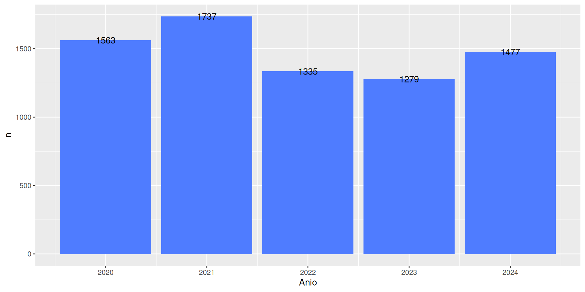

ggplot(tbl_desocup_2020_25, aes(x = Anio, y = n)) +
geom_col(fill = "#4F7CFF") +
geom_text(aes(label = n))
Encuentro 3: Anotaciones, Interactividad y Publicación
2025-09-09
geom_text(), geom_label()annotate()geom_hline(), geom_vline()geom_rect(), geom_polygon()vjust y hjust0 = ⬆️0.5 = centro1 = ⬇️0 = ➡️0.5 = centro1 = ⬅️ggplot(tbl_desocup_2020_25, aes(x = Anio, y = n)) +
geom_line(color = "#4F7CFF", size = 1.5) +
geom_point(color = "#4F7CFF", size = 3) +
annotate(
"rect",
xmin = 2019.5,
xmax = 2022.5,
ymin = 0,
ymax = 3000,
alpha = 0.2,
fill = "red"
) +
annotate(
"text",
x = 2021,
y = 3000,
label = "COVID-19",
size = 4
) +
theme_minimal()ggrepel: ejemplogeom_text(): Etiquetas superpuestasgeom_text_repel(): Etiquetas legibles
ggplotly()p <- ggplot(tbl_desocup_2020_25, aes(x = Anio, y = n)) +
geom_line(group = 1, color = "#4F7CFF", size = 1.5) +
geom_point(color = "#4F7CFF", size = 3) +
scale_y_continuous(labels = scales::comma) +
theme_minimal() +
labs(title = "Desocupación interactiva", x = "Año", y = "Desocupados")
ggplotly(p)p <- ggplot(
tbl_desocup_2020_25,
aes(
x = Anio,
y = n,
text = paste(
"Año:",
Anio,
"<br>Desocupados:",
scales::comma(n),
"<br>Período: 2020-2025"
)
)
) +
geom_line(color = "#4F7CFF", size = 1.5) +
geom_point(color = "#4F7CFF", size = 4) +
theme_minimal() +
labs(
title = "Desocupación con tooltips personalizados",
x = "Año",
y = "Desocupados"
)
ggplotly(p, tooltip = "text")df_estados <- df_eph |>
filter(ESTADO %in% c(1, 2)) |>
count(ANO4, ESTADO) |>
mutate(ESTADO = factor(ESTADO, labels = c("Ocupados", "Desocupados")))
p <- ggplot(df_estados, aes(x = ANO4, y = n, color = ESTADO)) +
geom_line(size = 1.2) +
geom_point(size = 3) +
scale_color_manual(
values = c("Ocupados" = "#4F7CFF", "Desocupados" = "#FF6B6B")
) +
scale_y_continuous(labels = scales::comma) +
theme_minimal() +
labs(title = "Ocupados vs Desocupados", x = "Año", y = "Población")
ggplotly(p)p <- ggplot(tbl_desocup_2020_25, aes(x = Anio, y = n)) +
geom_col(fill = "#4F7CFF") +
theme_minimal()
ggplotly(p) %>%
layout(
title = list(
text = "Desocupación - Configuración avanzada",
font = list(size = 18)
),
xaxis = list(title = "Año"),
yaxis = list(title = "Desocupados")
) %>%
config(
displayModeBar = TRUE
)# PNG para web y presentaciones
ggsave(
"grafico.png",
plot = mi_grafico,
width = 12,
height = 8,
dpi = 300,
units = "cm"
)
# PDF para publicaciones académicas
ggsave("grafico.pdf", plot = mi_grafico, width = 8, height = 6, units = "in")
# SVG para máxima calidad y escalabilidad
ggsave("grafico.svg", plot = mi_grafico, width = 10, height = 7, units = "cm")mi_grafico <- ggplot(tbl_desocup_2020_25, aes(x = Anio, y = n)) +
geom_line(group = 1, color = "#4F7CFF", size = 1.5) +
geom_point(color = "#4F7CFF", size = 3) +
geom_text_repel(aes(label = scales::comma(n)), size = 3, fontface = "bold") +
scale_y_continuous(labels = scales::comma) +
theme_minimal() +
labs(
title = "Evolución de la desocupación en Argentina",
subtitle = "Período 2020-2025",
x = "Año",
y = "Desocupados",
caption = "Fuente: EPH - INDEC | Elaborado por Estación R"
)
# Versión para web
ggsave(
"desocupacion_web.png",
plot = mi_grafico,
width = 12,
height = 8,
units = "cm",
dpi = 150
)
# Versión para imprimir
ggsave(
"desocupacion_print.png",
plot = mi_grafico,
width = 8,
height = 6,
units = "in",
dpi = 300
)df_eph con una variable de tu elección# Ejemplo 1: Salarios por educación
df_salarios <- df_eph |>
filter(!is.na(P21), NIVEL_ED %in% 1:7) |>
group_by(ANO4, NIVEL_ED) |>
summarise(salario_promedio = mean(P21, na.rm = TRUE))
# Ejemplo 2: Desocupación por edad
df_edad <- df_eph |>
filter(ESTADO == 2) |>
count(ANO4, CH06, name = "desocupados")df_edad_desocup <- df_eph |>
filter(ESTADO == 2, CH06 >= 14, CH06 <= 65) |>
mutate(
grupo_edad = case_when(
CH06 >= 14 & CH06 <= 24 ~ "14-24 años",
CH06 >= 25 & CH06 <= 34 ~ "25-34 años",
CH06 >= 35 & CH06 <= 54 ~ "35-54 años",
CH06 >= 55 & CH06 <= 65 ~ "55-65 años"
)
) |>
count(ANO4, grupo_edad, name = "desocupados") |>
drop_na()
promedio_total <- mean(df_edad_desocup$desocupados)
p_final <- ggplot(
df_edad_desocup,
aes(
x = ANO4,
y = desocupados,
color = grupo_edad,
text = paste(
"Año:",
ANO4,
"<br>Grupo:",
grupo_edad,
"<br>Desocupados:",
scales::comma(desocupados)
)
)
) +
geom_line(size = 1.2) +
geom_point(size = 3) +
geom_hline(
yintercept = promedio_total,
linetype = "dashed",
color = "gray40",
size = 0.8
) +
annotate(
"text",
x = 2021.5,
y = promedio_total + 5000,
label = paste("Promedio general:", scales::comma(round(promedio_total))),
color = "gray40",
fontface = "bold",
size = 3.5
) +
scale_color_brewer(type = "qual", palette = "Set2") +
scale_y_continuous(labels = scales::comma) +
theme_minimal() +
theme(
legend.position = "bottom",
plot.title = element_text(face = "bold", size = 14),
plot.subtitle = element_text(color = "gray50")
) +
labs(
title = "Desocupación por grupos etarios en Argentina",
subtitle = "Evolución 2020-2025 por rangos de edad",
x = "Año",
y = "Desocupados",
color = "Grupo etario",
caption = "Fuente: EPH - INDEC | Elaborado por Estación R"
)
# Versión interactiva
ggplotly(p_final, tooltip = "text"){gganimate}: Gráficos animados{magick}: Procesamiento de imágenes{sf}: Datos espaciales{maps}: Mapas base{leaflet}: Mapas interactivos{ggraph}: Redes y grafos{ggforce}: Formas y geometrías adicionales{ggridges}: Gráficos de cresta{waffle}: Gráficos de waffle{hrbrthemes}: Temas tipográficos{ggthemes}: Temas inspirados en medios{cowplot}: Layouts científicosTu opinión es valiosa para seguir mejorando el taller:

Visualización de datos - Encuentro 3